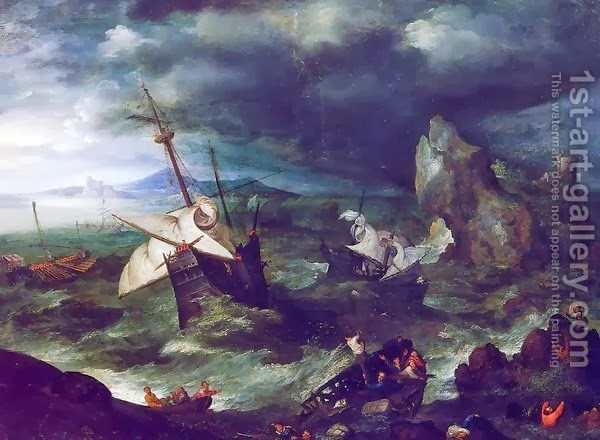

Sukkah 23 - Sukkah-mobile
If one makes his sukkah on top of a wagon - it is valid, since it is definitely only a temporary dwelling.
If he makes it on a ship, it is valid too. It once happened that Rabbi Akiva and Rabban Gamliel were traveling on a ship, and Rabbi Akiva made his sukkah on top of it. The following day a wind blew and toppled the sukkah. Said Rabban Gamliel, "Akiva, where is your sukkah now?" However, he was not taunting, rather, in Rabban Gamliel's view a sukkah on top of a ship is invalid. Why? - Because it cannot withstand the strong sea winds, and is thus as if non-existent. If so, what does Rabbi Akiva answer? - He says that if it could stand on land, that is enough permanence, and it is valid.
If he makes his sukkah on top of a tree - this is valid, but, since one cannot climb trees on holidays, one cannot go up into this sukkah on the first day of Sukkot, which is a Yom Tov.
If he makes a sukkah on top of a camel, between the camel's humps, it is valid, and here too he cannot go up into this sukkah on the holidays. Some say that the sukkah should be equally usable for all seven days of Sukkot and, since here he cannot use it on the first day, it is invalid for the rest. The Talmud continues with discussions of when live animals can be used for walls or coverings, or even for writing a Get on them, and what the problems with this might be.
Art: The Storm at Sea with Shipwreck By Jan The Elder Brueghel